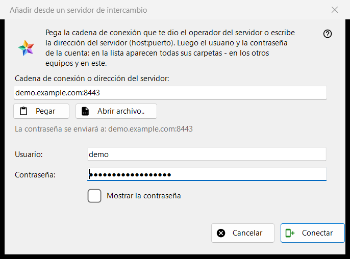
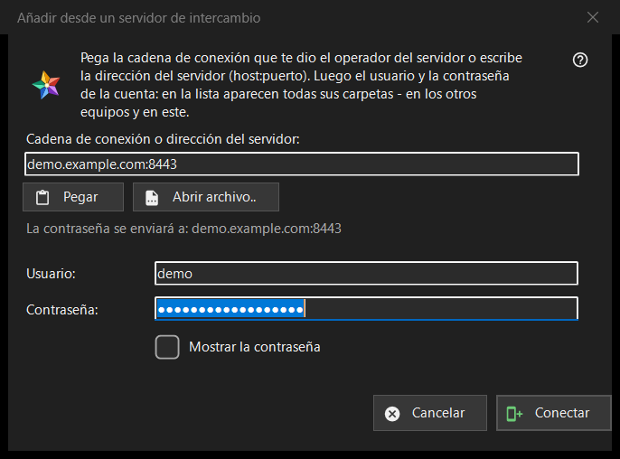

Añadir desde un servidor de intercambio
Para qué sirve
Conecta este equipo con una cuenta en un servidor de intercambio, de modo que las carpetas de todos los dispositivos de esa cuenta aparezcan en la lista de recursos. Se abre desde el botón «Añadir desde un servidor de intercambio..» de la sección «Mis dispositivos» de la lista de recursos, y cuando suelta una cadena o un archivo de conexión sobre el programa o escribe una en el cuadro de carpeta.


En este orden
- Pegue la cadena de conexión del operador del servidor, escriba la dirección como host:puerto o pulse «Abrir archivo..».
- Compruebe la línea «La contraseña se enviará a: ..»: esa dirección es el único lugar al que va la contraseña.
- Introduzca el usuario y la contraseña.
- Pulse «Conectar».
- Si el programa pregunta por el certificado del servidor, compare la huella digital con la que indicó el operador.
Los elementos
Cadena de conexión o dirección
El primer cuadro admite una cadena de conexión (empieza por FMSEXCH1:) o una dirección como host:puerto. «Pegar» lo rellena desde el portapapeles, con texto o con la imagen de un código QR, y «Abrir archivo..» lee un archivo .fmsexch o una imagen QR. Pegar solo rellena el formulario: no se envía nada hasta que pulse «Conectar». La línea bajo el cuadro muestra adónde irá la contraseña; una dirección web, un código de carpeta o una cadena dañada se rechazan allí con palabras sencillas.
Usuario y contraseña
«Usuario:» se rellena a partir de la cadena cuando esta incluye uno. «Contraseña:» aparece oculta; «Mostrar la contraseña» la revela. Al pulsar «Conectar», los cuadros de contraseña se vacían antes de que el primer byte salga del equipo. La línea de estado muestra el progreso y, si falla, el motivo: un usuario o una contraseña que no encajaron, demasiados intentos, un servidor que no responde.
Una cadena de invitación
Una cadena que es una invitación ya nombra el servidor y cambia la ventana a la creación de una cuenta: aparecen «Contraseña una vez más:» y una nota sobre la regla de la contraseña (al menos 10 caracteres, con una letra latina mayúscula, una minúscula y un dígito), y el botón pasa a decir «Crear la cuenta». La última palabra sobre la regla la tiene el servidor.
El certificado del servidor
Si el certificado es desconocido, una pregunta muestra su huella digital y pregunta si se confía en el servidor y se recuerda; la respuesta predeterminada es No. Si la cadena indica una huella digital y el servidor presenta otra, se muestran ambas, no se recuerda nada y no se envía ninguna contraseña.
Iniciar sesión de nuevo
Cuando la ventana se abre para iniciar sesión de nuevo en una entrada de servidor existente, muestra la dirección y el usuario de solo lectura, y la huella digital que esa entrada recuerda es el ancla de confianza.